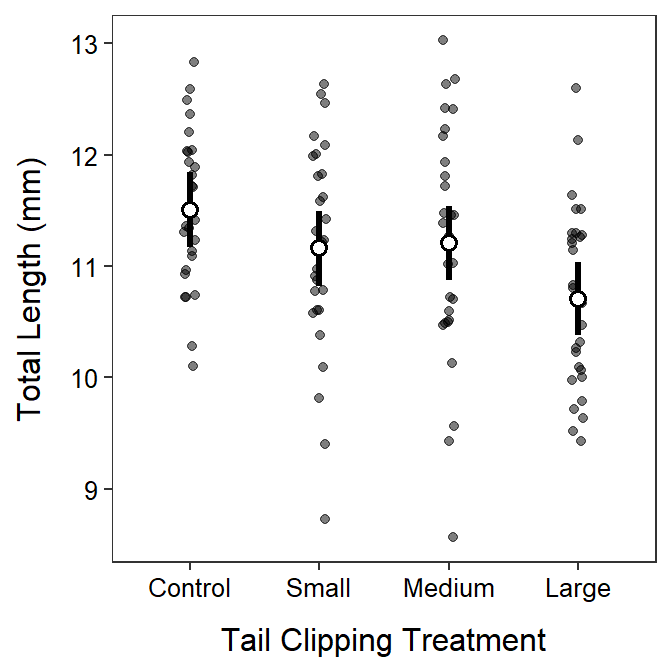

It is not appropriate to conduct multiple comparisons in this example because the H0 in the one-way ANOVA was not rejected. This result suggests that there is no difference among group means and, thus, no need to determine which specific groups differ.
> d <- read.csv("turtles.csv")
> d$Temperature <- factor(d$Temperature)> lm1 <- lm(Days~Temperature,data=d)
> anova(lm1)Analysis of Variance Table
Response: Days
Df Sum Sq Mean Sq F value Pr(>F)
Temperature 3 8025.5 2675.16 15.978 9.082e-07
Residuals 36 6027.3 167.42 > mc <- emmeans(lm1,specs=pairwise~Temperature)
> ( mcsum <- summary(mc,infer=TRUE) )$emmeans
Temperature emmean SE df lower.CL upper.CL t.ratio p.value
15 58.4 4.09 36 50.1 66.7 14.273 <.0001
20 44.6 4.09 36 36.3 52.9 10.900 <.0001
25 49.2 4.09 36 40.9 57.5 12.024 <.0001
30 20.1 4.09 36 11.8 28.4 4.912 <.0001
Confidence level used: 0.95
$contrasts
contrast estimate SE df lower.CL upper.CL t.ratio p.value
15 - 20 13.8 5.79 36 -1.78 29.4 2.385 0.0983
15 - 25 9.2 5.79 36 -6.38 24.8 1.590 0.3970
15 - 30 38.3 5.79 36 22.72 53.9 6.619 <.0001
20 - 25 -4.6 5.79 36 -20.18 11.0 -0.795 0.8563
20 - 30 24.5 5.79 36 8.92 40.1 4.234 0.0008
25 - 30 29.1 5.79 36 13.52 44.7 5.029 0.0001
Confidence level used: 0.95
Conf-level adjustment: tukey method for comparing a family of 4 estimates
P value adjustment: tukey method for comparing a family of 4 estimates > ggplot(data=d,mapping=aes(x=Temperature,y=Days)) +
geom_jitter(alpha=0.5,width=0.05) +
geom_pointrange(data=mcsum$emmeans,
mapping=aes(x=Temperature,y=emmean,
ymin=lower.CL,ymax=upper.CL),
size=1.1,fatten=2,pch=21,fill="white") +
labs(y="Days to Hatch",x="Temperature Treatment") +
theme_NCStats()
df <- read.csv("https://raw.githubusercontent.com/droglenc/NCData/master/Salamanders.csv")
df$Treatment <- factor(df$Treatment,levels=c("Control","Small","Medium","Large"))
lm2 <- lm(TL~Treatment,data=df)
anova(lm2)Analysis of Variance Table
Response: TL
Df Sum Sq Mean Sq F value Pr(>F)
Treatment 3 9.348 3.1161 3.953 0.01017
Residuals 109 85.924 0.7883 mcS <- emmeans(lm2,specs=pairwise~Treatment)
( mcSsum <- summary(mcS,infer=TRUE) )$emmeans
Treatment emmean SE df lower.CL upper.CL t.ratio p.value
Control 11.5 0.168 109 11.2 11.8 68.581 <.0001
Small 11.2 0.168 109 10.8 11.5 66.495 <.0001
Medium 11.2 0.168 109 10.9 11.5 66.793 <.0001
Large 10.7 0.165 109 10.4 11.0 64.941 <.0001
Confidence level used: 0.95
$contrasts
contrast estimate SE df lower.CL upper.CL t.ratio p.value
Control - Small 0.35 0.237 109 -0.269 0.969 1.475 0.4561
Control - Medium 0.30 0.237 109 -0.319 0.919 1.264 0.5875
Control - Large 0.80 0.235 109 0.186 1.414 3.402 0.0051
Small - Medium -0.05 0.237 109 -0.669 0.569 -0.211 0.9967
Small - Large 0.45 0.235 109 -0.164 1.064 1.914 0.2282
Medium - Large 0.50 0.235 109 -0.114 1.114 2.127 0.1512
Confidence level used: 0.95
Conf-level adjustment: tukey method for comparing a family of 4 estimates
P value adjustment: tukey method for comparing a family of 4 estimates ggplot(data=df,mapping=aes(x=Treatment,y=TL)) +
geom_jitter(alpha=0.5,width=0.05) +
geom_pointrange(data=mcSsum$emmeans,
mapping=aes(x=Treatment,y=emmean,ymin=lower.CL,ymax=upper.CL),
size=1.1,fatten=2,pch=21,fill="white") +
labs(y="Total Length (mm)",x="Tail Clipping Treatment") +
theme_NCStats()